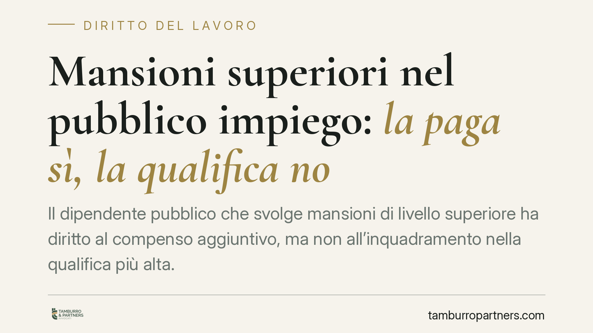

Mansioni superiori nel pubblico impiego: la paga sì, la qualifica no
Il dipendente pubblico che svolge mansioni di livello superiore ha diritto al compenso aggiuntivo, ma non all'inquadramento nella qualifica più alta. Lo ribadisce il Tribunale di Catanzaro, che precisa i presupposti probatori per ottenere le differenze retributive. Una distinzione netta rispetto al settore privato, con ricadute concrete su chi lavora nella pubblica amministrazione.

Il principio: compenso sì, promozione no
Nel pubblico impiego vige una regola che spiazza chi arriva dal settore privato: svolgere mansioni superiori a quelle del proprio inquadramento dà diritto a un compenso aggiuntivo, ma non comporta alcuna automatica promozione nella qualifica corrispondente.
È il cosiddetto principio del "paga sì, qualifica no". Il lavoratore che per mesi ha coperto un ruolo più elevato può pretendere le differenze retributive per quel periodo, ma non può chiedere di essere stabilmente inquadrato nel livello superiore. L'accesso alle qualifiche più alte, infatti, passa necessariamente per le procedure concorsuali.
Inquadramento normativo
La disciplina è contenuta nell'art. 52 del D.lgs. 165/2001 (Testo Unico sul pubblico impiego). La norma stabilisce che il prestatore di lavoro deve essere adibito alle mansioni per cui è stato assunto o a quelle equivalenti nell'ambito dell'area di inquadramento.
Quando il dipendente viene assegnato a mansioni superiori, il comma 5 gli riconosce il diritto al trattamento economico corrispondente all'attività effettivamente svolta, ma solo per il periodo di effettiva prestazione. L'assegnazione, però, non produce effetti sull'inquadramento giuridico: non vale come riconoscimento di qualifica.
La ragione è costituzionale. L'art. 97 della Costituzione àncora l'accesso ai pubblici impieghi al concorso. Riconoscere la promozione automatica a chi di fatto ha svolto mansioni superiori aggirerebbe quella regola e il principio di buon andamento dell'amministrazione.
La pronuncia del Tribunale di Catanzaro
Il Tribunale di Catanzaro torna sul tema ribadendo gli oneri probatori a carico del dipendente che chiede le differenze retributive. Non basta allegare di aver fatto "qualcosa in più": occorre dimostrare che le mansioni superiori siano state svolte in modo:
- qualitativamente prevalente, cioè che le attività di livello superiore abbiano caratterizzato in concreto la prestazione;
- quantitativamente prevalente, ossia che abbiano assorbito la parte maggiore dell'impegno lavorativo;
- temporalmente apprezzabile, per un periodo continuativo e non episodico.
In mancanza di questa prova, la domanda viene respinta. L'onere grava interamente sul lavoratore, che deve documentare con precisione la natura e la durata delle attività svolte.
Implicazioni pratiche per il dipendente pubblico
Chi lavora nella pubblica amministrazione deve avere chiaro che la copertura di un ruolo superiore - spesso per vacanza d'organico o assenza di un collega - non è una scorciatoia verso la carriera. È però una prestazione che va retribuita per quanto effettivamente resa.
Il punto debole di molte richieste è la prova. L'amministrazione tende a qualificare le attività come semplice "collaborazione" o come compiti rientranti nel livello di appartenenza. Senza documentazione puntuale, la differenza tra mansione superiore e mansione equivalente diventa difficile da dimostrare in giudizio.
Attenzione anche ai termini: il diritto alle differenze retributive si prescrive. Lasciar decorrere il tempo significa perdere le mensilità più lontane.
Cosa fare in concreto
- Documentate le mansioni fin da subito. Conservate ordini di servizio, email, deleghe, verbali e qualsiasi atto che attesti l'assegnazione a compiti di livello superiore.
- Ricostruite il periodo esatto. Annotate date di inizio e fine, continuità e percentuale di tempo dedicata alle attività superiori: serviranno a provare la prevalenza qualitativa, quantitativa e temporale.
- Non attendete oltre. Verificate i termini di prescrizione delle differenze retributive e muovetevi per tempo, evitando di perdere le mensilità più risalenti.
- Richiedete il riconoscimento per iscritto. Una domanda formale all'amministrazione fissa una data certa e sollecita una posizione ufficiale.
- Valutate la vostra posizione con un professionista prima di agire in giudizio: la valutazione preliminare della documentazione evita cause fragili sul piano probatorio.
---
*Contributo informativo a cura di Tamburro & Partners - Avv. Giuseppe Tamburro. Non costituisce parere legale.*
Ogni storia di lavoro ha i suoi tempi.
Se gestisci HR e vuoi un confronto su contenzioso, ispezioni o licenziamenti, scrivi allo studio. Ti rispondiamo entro un giorno lavorativo.